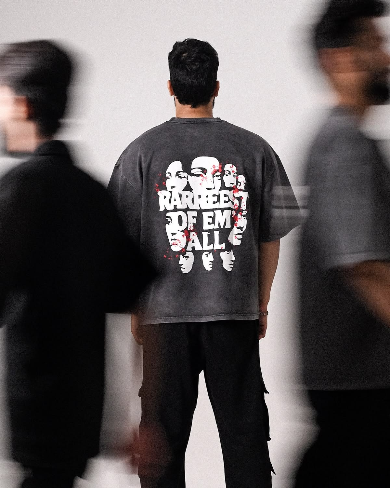
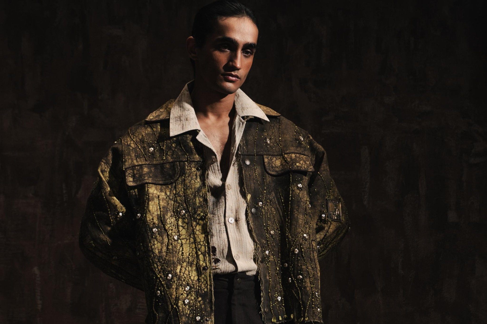
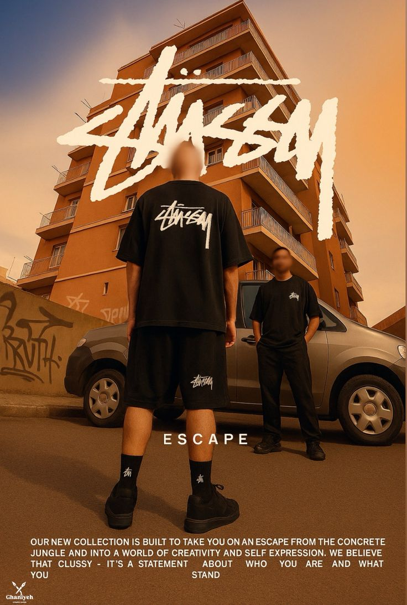
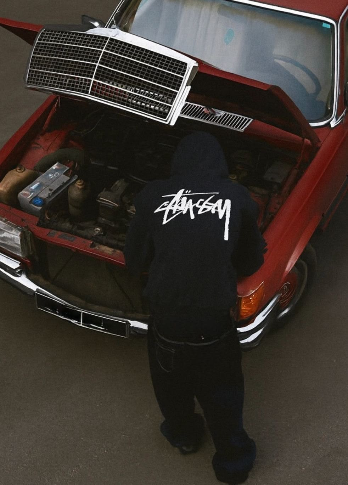
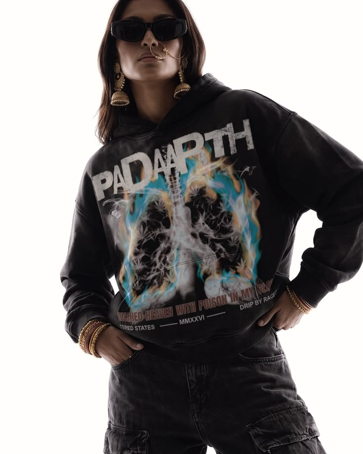
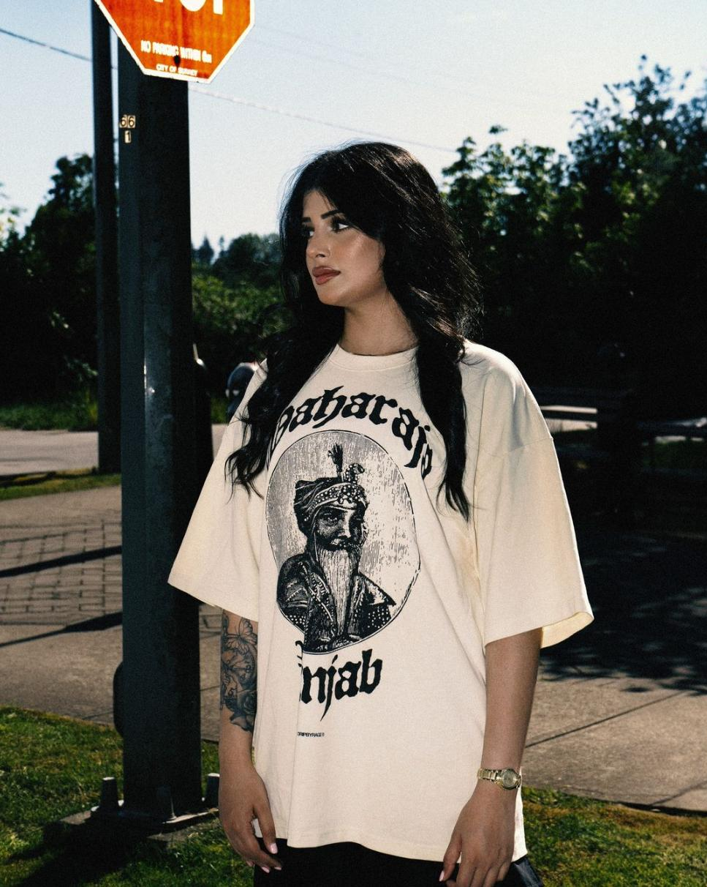
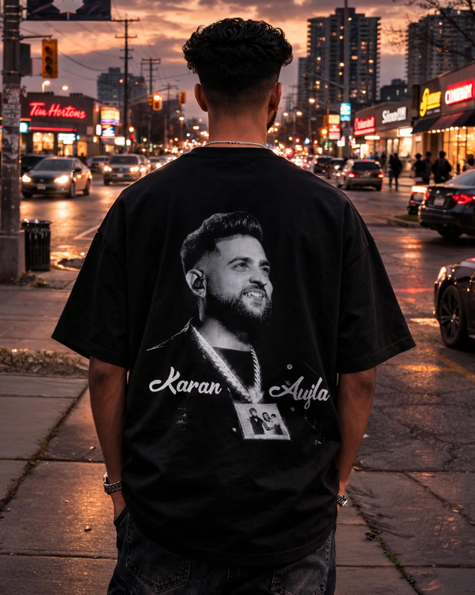
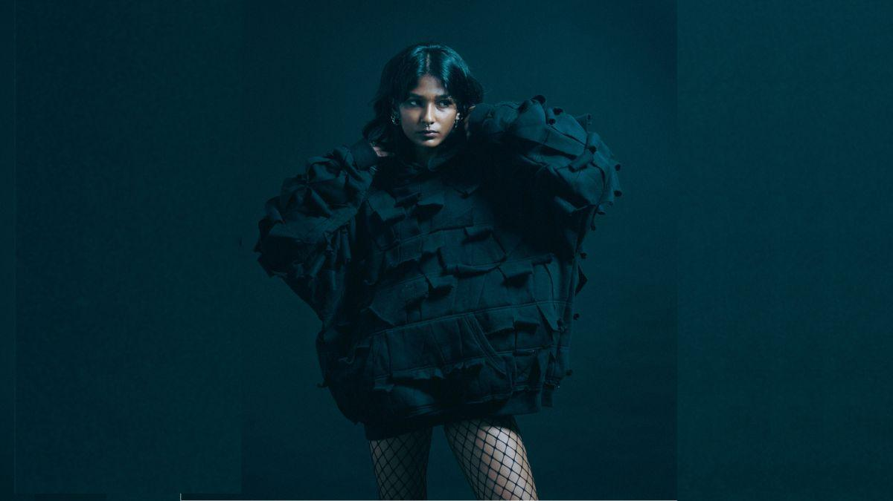
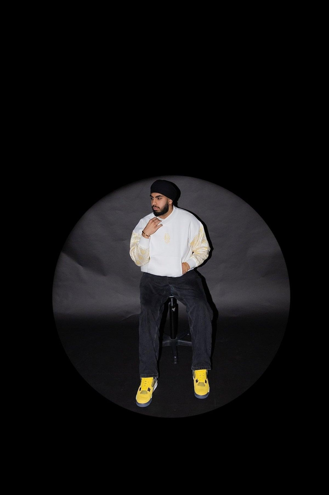

INDEPENDENT STREETWEAREST. PUNJAB / WORLDWIDE
DOUR
NO UNIFORM RULES
NO UNIFORM RULES
PUNJAB TO THE WORLD ✳ STREET CULTURE WITHOUT PERMISSION ✳ DOUR IS A STATE OF MIND ✳ PUNJAB TO THE WORLD ✳
01 / THE IDEA
A NEW-AGE PUNJABI STREETWEAR LABEL
LOCAL ROOTS.
GLOBAL ATTITUDE.
DOUR brings the confidence, character and visual language of Punjabi culture into a contemporary streetwear world. The identity should feel unapologetic, expressive and lived-in — less like a catalogue, more like a culture people want to be part of.
✳
THE CULTURE
IS THE INSPIRATION.
THE STREET IS THE CANVAS.

CAMPAIGN DIRECTION / 001THE STREETS ARE THE SET.

AFTER HOURS — ALWAYS IN MOTION
“
NOT HERE TO
FOLLOW A
UNIFORM.

LOUD GRAPHICS.
QUIET CONFIDENCE.
QUIET CONFIDENCE.
02 / VISUAL LANGUAGE
THE WORLD
OF DOUR.
A visual direction built around oversized silhouettes, expressive graphics, cinematic street photography and a little bit of grit. Product imagery leads; typography and layout give it attitude.



03 / THE DOUR STATEWEAR YOUR
WEAR YOUR
OWN STORY.
Punjabi at heart. Unrestricted by borders. DOUR is for the ones who carry where they come from — and decide where they’re going.
BUILD THE WORLD WITH US ↗04 / DESIGN NOTES
TYPE THAT
TAKES SPACE.
Heavy condensed headlines paired with clean, understated body text. The typography should feel bold without making the experience difficult to navigate.
TONAL.
NOT PLAIN.
Black, off-white and warm concrete form the base. Deep oxblood red appears as a sharp accent, supported by the colours already present in campaign photography.
EDITORIAL
BY DESIGN.
Asymmetric image grids, oversized type, full-bleed campaign moments and generous negative space. The page should feel like a streetwear editorial that also shops easily.
INK
#111111BONE
#EAE5DCOXBLOOD
#7B1717CONCRETE
#A69D91
#111111BONE
#EAE5DCOXBLOOD
#7B1717CONCRETE
#A69D91
Aa
BARLOW CONDENSEDHEADLINES / NAVIGATION / BIG MOMENTS
AaDM SANSBODY COPY / PRODUCT DETAILS / UI

OWN YOUR
SPACE®
SPACE®
05 / NEXT STEP
LET'S MAKE
DOUR REAL.
This is the proposed visual direction. The next stage is to confirm the first collection, product details, brand assets and available photography — then shape the final storefront around the real products.
START THE CONVERSATION ↗DOUR® — PUNJAB / WORLDWIDEDESIGN CONCEPT / 2026